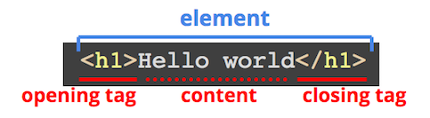
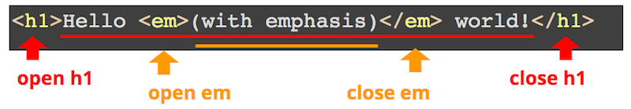
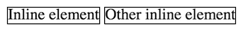

Chapter 4 Fondamenti di HTML
Una pagina web su Internet e’ fondamentalmente un insieme di file che il browser renderizza (mostra) in un certo modo, permettendo all’utente di interagire. Il modo piu’ basilare per controllare come un browser visualizza i contenuti (ad es. parole, immagini, ecc.) e’ codificare quel contenuto in HTML.
HTML (HyperText Markup Language) e’ un linguaggio usato per dare significato a testo altrimenti semplice, che il browser puo’ poi usare per determinare come visualizzare quel testo. HTML non e’ un linguaggio di programmazione ma un linguaggio di markup: aggiunge dettagli aggiuntivi alle informazioni (come note a margine di un libro), ma non contiene logica. HTML e’ un linguaggio di markup “hypertext” perche’ era originariamente pensato per annotare un documento con hyperlink, ovvero link ad altri documenti. Nell’uso moderno, HTML descrive il significato semantico del contenuto testuale: indica quale testo e’ un heading, quale testo e’ un paragrafo, quale contenuto e’ un immagine, quale testo e’ un hyperlink, e cosi’ via. In questo senso HTML svolge una funzione simile al linguaggio di markup Markdown, ma e’ molto piu’ espressivo e potente.
Questo capitolo fornisce una panoramica e una spiegazione della sintassi di HTML (come scriverlo per annotare i contenuti). La sintassi di HTML e’ molto semplice e in genere si impara rapidamente – anche se usarlo in modo efficace richiede piu’ pratica. Per maggiori dettagli su come usare HTML in modo efficace, vedi Semantic HTML.
4.1 Elementi HTML
Il contenuto HTML di solito e’ scritto in file .html. Usando l’estensione .html, il tuo editor, computer e browser dovrebbero capire automaticamente che questo file contiene testo con markup HTML.
Come menzionato nel Capitolo 2, la maggior parte dei web server serve di default un file chiamato index.html, e quindi quel filename e’ tradizionalmente usato per la home page di un sito.
Come per tutti i linguaggi di programmazione, i file .html sono in realta’ semplici file di testo con un’estensione speciale, quindi possono essere creati in qualsiasi editor di testo. Tuttavia, usare un editor per il codice come VS Code offre funzionalita’ aggiuntive utili che possono accelerare lo sviluppo.
I file HTML contengono il contenuto della tua pagina web: il testo che vuoi mostrare sulla pagina. Questo contenuto viene poi annotato (“marked up”) circondandolo con tag:

Il tag di apertura viene prima del contenuto e dice al computer “sto per darti contenuto con un certo significato”, mentre il tag di chiusura viene dopo il contenuto per dire “ho finito di dare contenuto con quel significato”. Per esempio, il tag <h1> rappresenta un heading di primo livello (equivalente a un # in Markdown), quindi il tag di apertura dice “ecco l’inizio dell’heading” e il tag di chiusura dice “questa e’ la fine dell’heading”.
I tag si scrivono con il simbolo minore <, poi il nome del tag (spesso una singola lettera), poi il simbolo maggiore >. Un tag di chiusura si scrive come un tag di apertura, ma include una barra / subito dopo il simbolo minore – questo indica che il tag sta chiudendo l’annotazione.
I nomi dei tag HTML non sono case sensitive, ma dovresti sempre scriverli in lowercase – vedi la Code Style Guide per i dettagli.
Le interruzioni di riga e gli spazi bianchi intorno ai tag (inclusa l’indentazione) sono ignorati. I tag possono quindi essere scritti su una riga propria o inline con il contenuto. Questi due usi del tag <p> (che indica un paragrafo di contenuto) sono equivalenti:
<p>
Il ragnetto, pian pianino, sali' lungo il tubo.
</p>
<p>Il ragnetto, pian pianino, sali' lungo il tubo.</p>Tuttavia, quando scrivi codice HTML, usa interruzioni di riga e spaziatura per leggibilita’ (per rendere chiaro quale contenuto appartiene a quale elemento) – di nuovo, vedi la Code Style Guide.
Presi insieme, i tag e il contenuto che contengono si chiamano HTML Element. Un sito e’ composto da molti di questi elementi – in effetti, tutto il contenuto e’ annotato in modo che faccia parte di qualche elemento.
Alcuni elementi di esempio
Lo standard HTML definisce molti elementi diversi, ognuno dei quali indica un significato diverso per il contenuto. Tra gli elementi comuni:
<h1>: un heading di livello 1<h2>: un heading di livello 2 (e cosi’ via, fino a<h6>)<p>: un paragrafo di testo<a>: un “anchor”, ovvero un collegamento ipertestuale<img>: un’immagine<button>: un button (pulsante)<em>: contenuto enfatizzato. Nota che non significa corsivo (che non e’ semantico), ma enfatizzato (che e’ semantico). Come_text_in Markdown.<strong>: contenuto importante, fortemente espresso. Come**text**in Markdown<ul>: una lista non ordinata (e<ol>e’ una lista ordinata)<li>: un elemento di lista (un elemento in una lista)<table>: una tabella di dati<form>: un form che l’utente deve compilare<div>: una division (sezione) di contenuto. Funziona anche come elemento block vuoto (seguito da un line break)
E molti altri.
I nomi degli elementi sono definiti dalla specifica HTML – spesso sono abbreviazioni di cio’ che rappresentano (ad es. <p> per paragrafo). In HTML standard puoi usare solo elementi definiti dalla specifica; non puoi “inventarti” tag. Provare a usare <paragraph> al posto di <p> sarebbe non standard e non verrebbe capito o renderizzato correttamente dal browser.
Non devi memorizzare ogni tipo di elemento HTML (anche se imparerai quelli comuni col tempo); puoi sempre cercare i dettagli sui singoli elementi. Per molte persone “conoscere” HTML significa sapere quali elementi esistono nello standard e come combinarli correttamente.
Vedi Semantic HTML per altri esempi e discussioni su elementi HTML specifici.
Commenti
Come in ogni linguaggio di programmazione, HTML include un modo per aggiungere commenti al codice. Lo fa usando un tag con sintassi speciale:
<!-- questo e' un commento -->
<p>questo non e' un commento</p>Il contenuto del tag commento (tra <!-- e -->) puo’ estendersi su piu’ righe, quindi puoi commentare piu’ righe racchiudendole tra <!-- e -->.
Poiche’ la sintassi dei commenti e’ un po’ scomoda da digitare, la maggior parte degli editor ti permette di commentare il testo selezionato premendo cmd + / (o ctrl + / su Windows). Se usi un editor di codice, prova a posizionare il cursore su una riga e usare quel comando da tastiera per commentare e de-commentare la riga.
I commenti possono comparire ovunque nel file. Come in altri linguaggi, vengono ignorati da qualsiasi programma che legge il file, ma restano nella pagina e sono visibili quando visualizzi il sorgente della pagina.
Attributi
Il tag di apertura di un elemento puo’ contenere uno o piu’ attributi. Sono simili agli attributi nella programmazione a oggetti: specificano proprieta’, opzioni o aggiungono significato a un elemento. Come i parametri nominati in R o python, gli attributi si scrivono nel formato attributeName=value (senza spazi attorno a =); i valori sono quasi sempre stringhe, quindi si scrivono tra virgolette. Piu’ attributi sono separati da spazi:
<tag attributeA="value" attributeB="value">
contenuto
</tag>Per esempio, un anchor (<a>) usa l’attributo href (“hypertext reference”) per specificare dove il browser deve navigare quando il contenuto viene cliccato:
<a href="https://ischool.uw.edu">Homepage iSchool</a>In un hyperlink, il contenuto del tag e’ il testo visualizzato, e l’attributo specifica l’URL del link. Questo significa che l’URL viene “prima” del testo visualizzato – l’opposto della sintassi dei link in Markdown.
Allo stesso modo, un’immagine (<img>) usa l’attributo src (source) per specificare quale immagine mostra. (Il fatto che i link usino href e le immagini usino src e’ una delle tante particolarita’ della sintassi HTML). L’attributo alt di un’immagine contiene testo alternativo da usare se il browser non puo’ mostrare immagini – ad esempio con lettori di schermo (per persone con disabilita’ visive) e per gli indicizzatori dei motori di ricerca.
<img src="baby_picture.jpg" alt="un bel bimbo">Poiche’ <img> non ha contenuto testuale, e’ un elemento vuoto (vedi sotto).
Gli attributi consentiti e i loro nomi sono determinati dalla specifica HTML – ogni elemento supporta un certo set di attributi (vedi il HTML attribute reference). Molti attributi sono supportati da alcuni elementi e non da altri. Tuttavia, esistono anche dei global attributes che possono essere usati su qualsiasi elemento. Per esempio:
Ogni elemento HTML puo’ includere un attributo
id, usato per dare un identificatore univoco cosi’ da poterlo riferire in seguito (ad es. da JavaScript). Gli attributiidsono nominati come variabili e devono essere unici nella pagina.<h1 id="title">La mia pagina web</h1>L’attributo
ide’ usato piu’ spesso per creare “bookmark hyperlink”, ovvero hyperlink a una posizione specifica della pagina (cioe’ che fanno scorrere la pagina fino a quel punto). Lo fai includendo l’idcome fragment dell’URL (ad es. dopo#nell’URL).<a href="index.html#nav">Link a un elemento in `index.html` con `id="nav"`</a> <a href="#title">Link a un elemento nella pagina corrente con `id="title"`</a>Nota che, quando specifichi un id (cioe’
<h1 id="title">) non includi il simbolo#. Tuttavia, per linkare a un elemento con idtitle, includi il simbolo#prima dell’id (cioe’<a href="#title">)Ogni elemento HTML puo’ includere un attribute
class, usato per specificare quali CSS class si applicano. Vedi CSS Fundamentals per maggiori dettagli.L’attribute
langindica la lingua in cui e’ scritto il contenuto dell’elemento. I programmi che leggono questo file possono usarlo per indicizzare correttamente il contenuto o tradurlo in un’altra lingua:<p lang="sp">No me gusta</p>L’attribute
langsi specifica principalmente sull’elemento<html>(vedi sotto) per definire la lingua predefinita della pagina; cosi’ non devi indicare la lingua di ogni elemento.<html lang="en">
Nota che alcuni attribute si scrivono senza un valore esplicito, nel senso che il valore e’ il boolean true (per avere false, ometti l’attribute). Per esempio, un <button> puo’ essere disabilitato:
<!-- the presence of the `disabled` means the value is `true` -->
<button disabled>Non puoi cliccarmi perche' sono disabilitato</button>Elementi vuoti
Alcuni elementi HTML non richiedono un closing tag perche’ non possono contenere contenuto. Questi elementi sono spesso usati per inserire media in una web page, come l’elemento <img>. Con un <img> puoi specificare il path dell’immagine nell’attribute src, ma l’elemento immagine non puo’ contenere testo o altri contenuti. Poiche’ non puo’ contenere contenuto, ometti del tutto l’end tag:
<img src="picture.png" alt="description of image">Versioni piu’ vecchie di HTML (e linguaggi correlati come XML) richiedevano di includere una barra / subito prima del simbolo di chiusura >. Questa barra di “chiusura” indicava che l’elemento era completo e non si aspettava altro contenuto — un cosiddetto self-closing tag:
<img src="picture.png" alt="description of image" />In HTML5 non e’ piu’ richiesto, quindi sentiti libero di omettere la barra (anche se alcuni puristi, o chi lavora con XML, la includono ancora). Dovrai includere la barra di chiusura / sugli empty element quando scrivi HTML per app React.
4.2 Nidificazione di elementi
Le web page sono composte da molte (centinaia! migliaia!) di elementi HTML. Inoltre, gli elementi HTML possono essere nested: cioe’ il contenuto di un elemento HTML puo’ contenere altri tag HTML (e quindi altri elementi HTML):

<em> e’ annidato nel contenuto dell’elemento <h1>.Il significato semantico indicato da un elemento si applica a tutto il suo contenuto: quindi tutto il testo nell’esempio sopra e’ un top-level heading, e il contenuto “(with emphasis)” e’ enfatizzato in aggiunta.
Poiche’ gli elementi possono contenere elementi che possono a loro volta contenere elementi, un documento HTML finisce per essere strutturato come un “tree” di elementi:

In un documento HTML, l’elemento “root” dell’albero e’ sempre un <html>. All’interno mettiamo un elemento <body> che contiene il “body” del documento (cioe’ il contenuto mostrato):
<html lang="en">
<body>
<h1>Ciao mondo!</h1>
<p>Questo e' <em>contenuuuto</em>!</p>
</body>
</html>Questo modello di HTML come albero di “nodes” — insieme a un’API (interfaccia di programmazione) per manipolarli — e’ noto come Document Object Model (DOM). Vedi Document Object Model (DOM) per dettagli.
Seguendo la metafora dell’“albero”, si dice che un elemento e’ il parent degli elementi che contiene, e l’elemento contenuto e’ il child. Nell’esempio sopra, l’elemento <em> e’ il child dell’elemento <p>, e l’elemento <p> e’ il parent dell’elemento <em>. Il <body> e’ un child di <html>, e il parent di <h1> e <p>.
Attenzione! Gli elementi HTML devono essere “chiusi” correttamente, altrimenti il significato semantico puo’ risultare errato! Se dimentichi di chiudere il tag <h1>, allora tutto il contenuto successivo sara’ considerato parte dell’heading! Ricorda di chiudere i tag interni prima di chiudere quelli esterni. La validazione del tuo HTML puo’ aiutare a trovare questi errori.
La nidificazione degli elementi e’ fondamentale in HTML; in effetti, tutti gli elementi della pagina sono child di qualche altro elemento (tranne l’elemento <html> alla root). Per esempio, una list puo’ essere specificata nidificando elementi list item (<li>) dentro un elemento unordered list (<ul>). E naturalmente, quei <li> possono contenere ancora altri elementi, come ulteriori ordered list (<ol>).
<!-- An unordered list <ul> with 3 items <li>. The second item's content
contains another ordered list <ol> containing 2 items. -->
<ul>
<li>Pigeons</li>
<li>
Swallows:
<ol>
<li>African</li>
<li>European</li>
</ol>
</li>
<li>Budgies</li>
</ul>Questo esempio ha elementi nidificati a 4 livelli (ed e’ relativamente superficiale per HTML). Nota che il secondo <li> contiene testo (la parola “Swallows:”) e anche un altro elemento (<ol>) — ma tutto e’ contenuto dell’elemento.
Elementi block vs. inline
Tutti gli elementi HTML rientrano in una di due categorie:
Block elements formano un “blocco” visibile nella pagina. In particolare, un block element viene renderizzato sotto (su una “nuova riga” rispetto a) il contenuto precedente, e qualsiasi contenuto dopo verra’ renderizzato sotto di esso. I block element tendono a essere elementi strutturali della pagina: heading (
<h1>), paragraph (<p>), list (<ul>), ecc.<p>Block element</p> <p>Block element</p> Two block elements rendered on a page.
Two block elements rendered on a page.Inline elements sono contenuti “nella riga” del contenuto. Questi non avranno un “line break” dopo di loro. Gli inline element sono usati per modificare il contenuto invece di separarlo, ad esempio per dare enfasi (
<em>) o dichiarare che e’ un hyperlink (<a>).<em>Inline element</em> <em>Other inline element</em>
Two inline elements rendered on a page.
Quindi, in generale, i block element si usano per specificare le “parti” della pagina o annotare grandi blocchi di contenuto, mentre gli inline element annotano parti di quel contenuto (singole parole o frasi).
Quando nidifichi elementi, gli inline element possono andare dentro block element o altri inline element, ed e’ comune mettere block element dentro altri block element (ad es. un <li> dentro un <ul>, o un <p> dentro un <div>). Tuttavia, non e’ valido nidificare un block element dentro un inline element. Per esempio, non puoi mettere un <p> dentro un <em> per dire che il paragraph e’ enfatizzato (dovrebbe essere il contrario). L’unica eccezione e’ che e’ consentito nidificare block element dentro <a> per trasformare l’intero blocco in un hyperlink, anche se non e’ molto comune.
Alcuni elementi hanno ulteriori restrizioni sulla nidificazione. Per esempio, un <ul> (unordered list) puo’ contenere solo elementi <li> — qualsiasi altra cosa e’ considerata markup non valido.
Ogni elemento ha un diverso display type di default (ad es. block o inline), ma e’ anche possibile cambiare come un elemento viene visualizzato usando CSS. Vedi la proprieta’ display.
4.3 Struttura della web page
Come detto sopra, i documenti HTML seguono sempre una struttura specifica, con tutto il contenuto nidificato dentro un singolo elemento <html>. Quindi i documenti web usano questo “template”:
<!DOCTYPE html>
<html lang="en">
<head>
<meta charset="utf-8">
<meta name="author" content="your name">
<meta name="description" content="description of your page">
<title>My Page Title</title>
</head>
<body>
...
Content goes here!
...
</body>
</html>(In alternativa, puoi usare la scorciatoia di VS Code: scrivi un punto esclamativo (!) e poi premi tab in un file .html per creare uno skeleton simile).
Ci sono alcune parti ed elementi in questo template:
Doctype Declaration. Tutti i file HTML iniziano con una document type declaration, comunemente chiamata “Doctype.” Questo dice al programma di rendering (ad es. il browser) quale formato e sintassi usa il documento. Poiche’ il tuo documento web e’ scritto in HTML 5, lo dichiari come
<!DOCTYPE html>.<!DOCTYPE>non e’ tecnicamente un tag HTML (in realta’ e’ XML). Anche se i browser moderni faranno un “best guess” sul Doctype, e’ una best practice specificarlo esplicitamente. Includi sempre il Doctype all’inizio dei tuoi file HTML.L’elemento
<html>: l’elemento<html>e’ l’inizio del documento HTML (l’intero documento e’ contenuto in quell’elemento). Specifica un attributelangper questo elemento.L’elemento
<html>contiene esattamente due elementi child: un<head>e un<body>. Nessun altro elemento puo’ andare direttamente dentro<html>.L’elemento
<head>: l’elemento<head>contiene metadata per il documento — dati sul contenuto che non vengono visualizzati nella pagina. Specifica informazioni sul documento renderizzato. Ci sono alcuni elementi comuni che dovresti includere nel<head>:Un
<title>, che specifica il “titolo” della web page:<title>My Page Title</title>
I browser mostrano il page title nella tab in alto nella finestra del browser, e lo usano come nome predefinito del bookmark se lo salvi. Ma il title viene anche usato da search indexer e altri agenti automatici, perche’ spesso fornisce un forte segnale sull’argomento della pagina. Quindi il titolo dovrebbe essere informativo e riflettere il contenuto.
Un tag
<meta>che specifica la character encoding della pagina:<meta charset="UTF-8">Il tag
<meta>rappresenta “metadata” (informazioni sui dati della pagina) e usa un attribute e un valore per specificare tali informazioni. Il<meta>piu’ importante e’ quello del character set, che dice al browser come convertire i bit binari del server in lettere. Quasi tutti gli editor oggi salvano i file inUTF-8, che supporta la combinazione di script diversi (Latin, Cyrillic, Chinese, Arabic, ecc.) nello stesso file.Puoi usare
<meta>anche per includere informazioni su autore, descrizione e keyword della pagina:<meta name="author" content="your name"> <meta name="description" content="description of your page"> <meta name="keywords" content="list,of,keywords,separate,by,commas">Nota che l’attribute
namespecifica il “nome variabile” di quel metadata, mentre l’attributecontentspecifica il “valore” di quel metadata. Gli elementi<meta>sono empty elements e non hanno contenuto proprio.Anche qui, questi elementi non sono visibili nella finestra del browser (perche’ sono nel
<head>), ma vengono usati dai motori di ricerca per indicizzare la pagina.- Come minimo, includi sempre le informazioni dell’autore nella home page dei siti che crei.
Elementi aggiuntivi per la sezione <head> verranno introdotti nei capitoli successivi, come l’uso di <link> per includere CSS e di <script> per includere JavaScript.
Nota che <head> e’ diverso da un elemento header (come <h1>), e anche dall’elemento <header> discusso in Semantic HTML.
- L’elemento
<body>: l’elemento<body>contiene tutto il contenuto visibile della web page. Ogni heading, paragraph, image, form, ecc. va dentro<body>. Nota che non puoi mettere elementi visibili fuori dal<body>— non nel<head>e nemmeno direttamente in<html>. Anche i contenuti di header e footer fanno parte del<body>!
Risorse
Alcuni riferimenti e documentazione utili mentre inizi a imparare HTML includono:
Il primo riferimento e’ della Mozilla Developer Network (MDN). Questo riferimento e’ gestito da Mozilla, l’organizzazione che crea e mantiene il browser Firefox. E’ il riferimento piu’ dettagliato e accurato per il web programming, ed e’ quello che considero piu’ vicino alla “documentazione” per la sintassi del codice.
Il secondo riferimento e’ di W3Schools, un riferimento molto amichevole per principianti su molti argomenti di web development. Tuttavia, e’ un po’ meno esteso e accurato di MDN.
Ricorda anche che puoi visualizzare il page source HTML di qualsiasi web page che visiti. Usalo per esplorare come altri hanno sviluppato pagine e per imparare nuovi trucchi e tecniche.